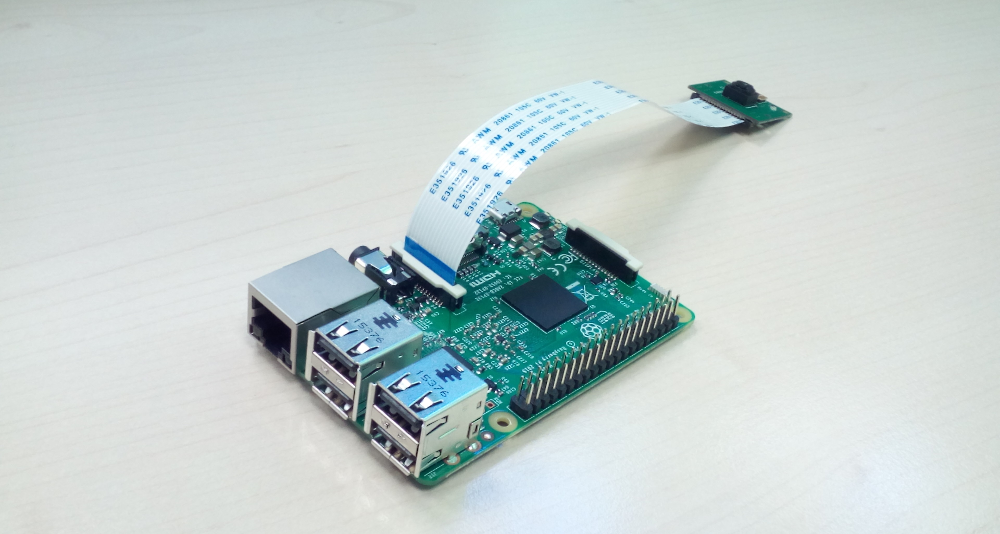
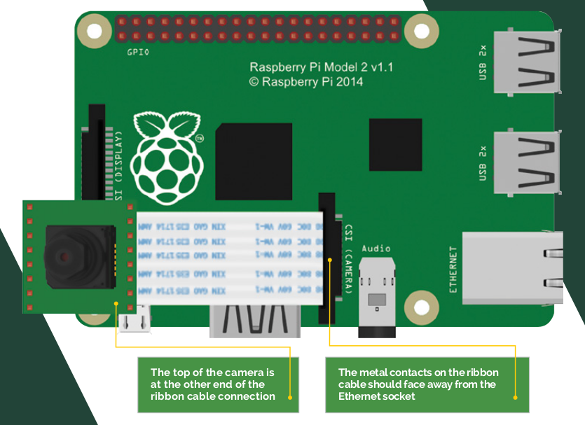

Controlar la càmera amb Raspberry Pi
Hi ha una càmera especialment dissenyada per acoplar-la a la Raspberry Pi, és la Raspicam.

Connectar la càmera
Per aconnectar la càmera hem de tirar cap amunt el lliscador de plàstic del sòcol indicat amb el rètol CAMERA. La cinta de cables ha de posar-se de manera que la part blava estigui mirant cap el port Ethernet com es veu a la figura de sota.

Provant la càmera
Per a provar la càmera podem prendre les primeres imatges executant la següent ordre des del terminal:
raspistill -o primerafoto.jpg
Mirar la imatge
Per veure la imatge podem posar:
gpicview primerafoto.jpg
Aquests programes tenen moltes més opcions, per veure-les consulteu la referència que podeu trobar al final d’aquesta pàgina.
Controlar la càmera amb Python
Per a controlar la càmera amb Python és necessari fer servir el mòdul de Python picamera. Per a instal·lar el mòdul, des del terminal executem:
sudo apt-get install python3-picamera
Per a poder instal·lar aquest mòdul hem de tenir la Raspberry Pi connectada a internet.
Controlar la càmera amb un botó
A sota podem veure el codi per a controlar la càmera amb un botó.
#importació de mòduls
from datetime import datetime
import RPi.GPIO as GPIO
import picamera
GPIO.setmode(GPIO.BOARD)
pin_boto = 14
GPIO.setup(pin_boto, GPIO.IN, pull_up_down=GPIO.PUD_DOWN)
pc = picamera.PiCamera()
running = True
#pc.resolution = (1024, 768)
#use this to set the resolution if you dislike the default values
timestamp=datetime.now()
def picture():
pc.capture('pic'+str(timestamp)+'.jpg') #taking the picture
GPIO.add_event_detect(pin_boto, GPIO.RAISING, callback=picture, bouncetime=500)
try:
print("Activa")
while running:
pass
#we detect Ctrl+C then quit the program
except KeyboardInterrupt:
running = False
GPIO.cleanup()
Referència:
Per a més informació sobre com controlar la càmera amb la Raspberry Pi veure:
https://www.raspberrypi.org/magpi-issues/Essentials_Camera_v1.pdf